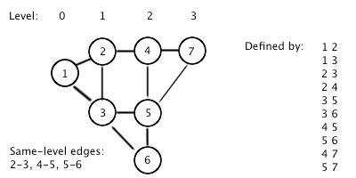

In a graph, each node has a "level" -- a distance to the root (start) node. One of the special properties that could be extracted, is that if there is a connection between two nodes of the same level, then there is also a cycle of odd length in the graph, which in turn gives us more properties about the structure.
The input file DATA4.txt will contain 5 sets, of input. A single positive integer 1 <= N < 50, followed by N lines describing the graph. Each line is two integers, IDs of nodes, separated by a space. Node IDs are positive integers less than 100. The root (start) node has ID 1.
The output file OUT4.txt will contain 5 lines, integer count of how many pairs of nodes have a connection, such that the shortest path from 1 to each node is equal.

3 1 2 3 2 1 3 10 1 2 1 3 2 3 2 4 3 5 3 6 4 5 5 6 4 7 5 7
1 3